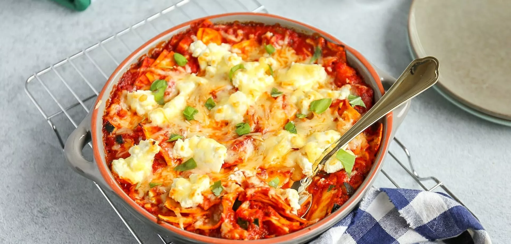

Spaghetti Bolognese

Ingedrienten
- 500g spaghetti
- 200g gehakt
- 1 blik tomaten
- 1 ui, gesnipperd
- 2 teentjes knoflook, fijngehakt
- Olijfolie
- Zout en peper naar smaak
Bereiding
- Kook de spaghetti volgens de aanwijzingen op de verpakking.
-
Verhit een beetje Olijfoliein een pan en bak de uit en knoflook tot ze
glazig zijn.
- Voeg het gehakt toe en bak het bruin.
- Voeg het blik tomaten toe en laat het geheel 15 minuten sudderen.
- Breng op smaak met zout en peper.
- Serveer de saus over de spaghetti.